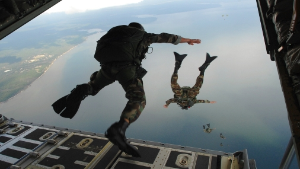
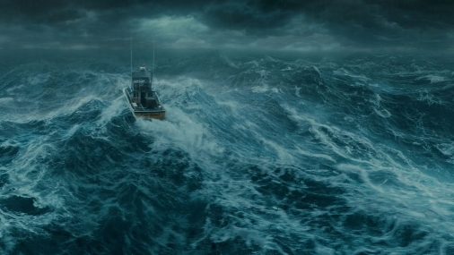

Cars have been and always will be a favorite hobby of mine. I'm sure
most dudes have wanted to experience what it is like to go at
gut-wrenching speeds like 200mph. Racing in a Koenigsegg Jesko would
be a dream come true on a race track running corners at high speeds
would definitely become a core memory of mines

Sky Diving
Skydiving is one of the terrifying experiences, I'm sure of it, but I
still want to try it out. Seeing soldiers jump off a plane and free
fall likely sparked my interest in skydiving. It looks like an
unforgettable experience, and I'm willing to try it at least once.
Hot Air Balloon
Compared to the other things I want to try, hot air balloons may seem
mundane, but it is still an experience worth having. The view would
most likely be a top 20 memory.

Sea Storm
Being on a ship in the middle of the sea during a massive thunderstorm
would be absolutely amazing. The heart-pounding feeling of being at
mercy to mother nature may sound crazy, but it is an experience I
really want to try. It's because of how boring my experience was and
still is with the disappointing storms in Phoenix, AZ, but if I had
the chance, I would hop on a boat and sail straight toward the heart
of the storm.